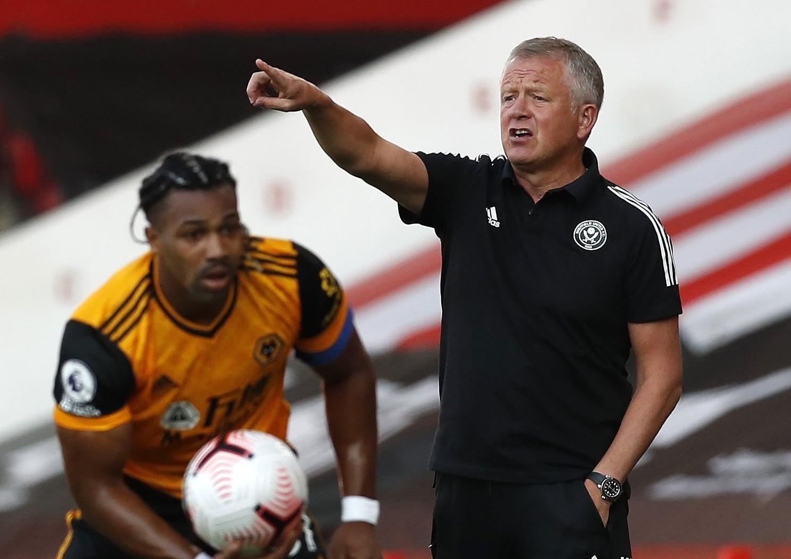

Final Score: Sheffield United 0-2 Wolves
It was a battle between two teams that barely missed out on European competition last season in the opening weekend of the Premier League. Both teams came into the new season with their lineups from 19/20 relatively intact - with only goalkeeper Dean Henderson missing for Sheffield United and wingback Matt Doherty missing for Wolves. It was expected to be a tight game, but two early goals from Wolves allowed them to play conservatively and keep control of the game, ultimately prevailing 2-0. Here are five key takeaways:
2. Absence of Dean Henderson Will Not Be Sheffield United’s Biggest Problem This Year
Dean Henderson’s impact on Sheffield United last season should not be understated - he did save nearly five more goals than expected according to Statsbomb’s post-shot expected goal metric - but his and the rest of the Blades’ defense’s strong campaign masked a problem that it does not look like they have solved. Sheffield United just don’t create enough chances. They ranked 13th lowest last season in non-penalty expected goals (with 40.8) which, while respectable, was only three xG more than an Aston Villa team that narrowly avoided relegation. Wilder’s team are great in buildup play, creating overloads out wide with their “overlapping centerbacks” strategy and playing great passing combinations, but when it comes to the final pass, most of the time it’s going to be a cross. And if their crossing is as bad as it was today (they completed 7/43 crosses, that’s 16%), they are really going to struggle to create opportunities to score. A tight defense kept them competitive last season, but if they start struggling to keep goals out, Sheffield United will be in trouble.
3. Two Early Goals Allow Wolves To Settle In And Play Their Game
As we’ve come to know, Wolves are at their best when they are sitting deep, defending tight, and breaking off counterattacks. They struggle when they are forced to break down deep-lying teams that forced them to take a possession approach rather than a direct one. Both of these are evident in their positive record against the top teams (including two wins over Manchester City) and their not-as-good record against teams that play like they do (four draws from four games against the likes of Burnley and Newcastle). Sheffield United would normally be in the latter category, which helped them pick up 4/6 points against Wolves last season. However, Wolves going up 2-0 within six minutes changed the dynamic of the game and allowed Wolves to play the way they wanted. Sheffield United were now forced to bring players forward, leaving plenty of space for Wolves’ front three to play in behind and cause trouble. Sheffield United were also forced to play through Wolves’ stellar defense - nearly the best defense in the league last season, in fact, finishing second in expected goals against 0.2 behind Manchester City. While their offense is built around breaking down deep, compact defenses, the Blades’ crossing was so poor that they never really posed a threat. In the end, it was a very comfortable victory for Wolves.
4. Adama Traore Kept Quiet, But The Blades Are Overwhelmed
Though it was partly because he was fielded in a wingback role, Adama Traore was totally shut down today. Sheffield United did try to target his side of the field at times by trying to play Enda Stevens, John Fleck, and Billy Sharp, but their lack of speed allowed Traore to get back easily. Despite the lack of threat, however, it did force Traore to play further back and kept him from influencing the attack as he normally does. Unfortunately for Sheffield United, they weren’t able to shut down anyone else and Wolves did plenty of damage on the counterattack with Raul Jimenez, Daniel Podence, and Pedro Neto. Sheffield United were overwhelmed by Wolves’ athleticism and movement and had Wolves not taken the foot off of the gas after going up 2-0, it could have been a lot worse. It will be interesting to see if Chris Wilder decides to change something tactically in the coming weeks to guard against a threat like this. They thrive when they are controlling games, but if it comes at the expense of being vulnerable to counterattacks, the Blades may want to switch things up a bit.

5. Raul Jimenez Once Again Shows His All-Around Brilliance
I feel like I’ve written this takeaway so many times that it’s soon going to be expected. I’d stop writing about him, but he stands out to me every time I watch Wolves. His excellent link-up play with the other Wolves attackers, his stellar off-ball movement, and his top-class finishing ability make him extremely fun to watch (and extremely frustrating to play against in CONCACAF). All of that was on display against Sheffield United, and it looks like he’s picked up right where he left off after a stellar 19/20 season in which he scored 17 and assisted 6. He would easily fit into any top team and if he was just a couple of years younger he would be bringing in big money for Wolves. I’m kind of glad that he isn’t going anywhere though. It’s fun to have top-level players like this playing for non-super clubs.